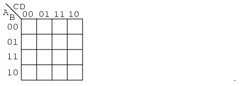
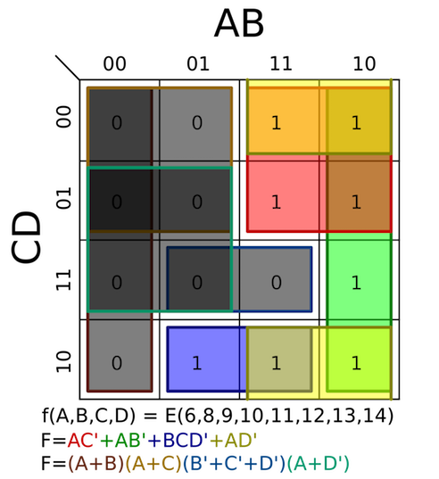

Introduction to Karnaugh Maps and Grey Code
Karnaugh Maps are a unique way of plotting expressions by taking advantage of grey codes (reflective binary values) to find patterns and simplify expressions. Grey codes refer to a consecutive sequence of bits where only one bit differs from each bit change. For example, 001 011 111 101 would be considered a grey code sequence because they are only one bit different from one to another.
Why Grey Codes?
Grey codes allow us to quickly figure out which bits stay consistent and not, by being able to isolate to a single bit. This way, if we place a grid with 1s, we will see that if two adjacent values are both true then we would be able to notice that at least one bit differs in the expression. This is particularily useful when it comes to Karnaugh Maps which we will see later.
What's a Karnaugh Map?
Karnaugh Maps allow us to plot values on a grid that conforms to grey codes.

Along the axis, we notice that the individual bits only vary by one. We would then populate each grid with the value of 1 if it is true at that section. This example is a 4 variable Karnaugh Map.
How can Karnaugh Maps simplify?
We can use Karnaugh Maps to find groups that have bits that shift by only a value of one or similar. To do this, we would try to find groups in Karnaugh Maps of 2^N value, so groups of 1, 2, 4, 8, 16, etc.
Example of Karnaugh Map Groupings
The following example shows some groupings, which are colour coded.
